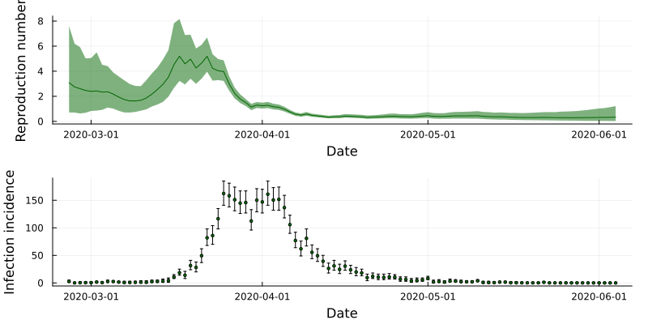

Code
using Plots, Measures
include("../src/LoadData.jl")
include("../src/FitModel.jl")
Y = loadData("NZCOVID")using Plots, Measures
include("../src/LoadData.jl")
include("../src/FitModel.jl")
Y = loadData("NZCOVID")Observation noise is frequently highlighted as…
All five models introduced below leverage the same state-space model:
\[ \begin{align} \log R_t | \log R_{t-1} &\sim \text{Normal}(\log R_{t-1}, \sigma) \\ I_t | R_t, I_{1:t-1} &\sim \text{Poisson}(R_t \Lambda_t) \end{align} \tag{9.1}\]
and differ only in the observation model.
If we assume that each case has an independent probability of being reported, we can model \(C_t\) using a Binomial distributon: \[ C_t | I_t \sim \text{Binomial}\left(I_t, \ \rho\right) \tag{9.2}\]
The reporting rate \(\rho\) is not identifiable from reported case data alone1, so must be set by the user. We use \(\rho = 0.5\) below as an example. This model thus has the same number of parameters as the basic model (one parameter, \(\sigma\)). The hidden-state model can be written as:
function underreportingModel(σ, Y::DataFrame, opts::Dict)
# Specify reporting rate
ρ = 0.5
# Extract frequently used options
T = opts["T"]
N = opts["N"]
L = opts["L"]
# Initialise output matrices
R = zeros(N, T)
I = zeros(N, T)
W = zeros(N, T)
# Sample from initial distributions
R[:,1] = rand.(opts["pR0"], N)
I[:,1] = rand.(opts["pI0"], N)
# Run the filter
for tt = 2:T
# Project according to the state-space model
R[:,tt] = exp.(rand.(Normal.(log.(R[:,tt-1]), σ)))
Λ = sum(I[:, (tt-1):-1:1] .* ω[1:(tt-1)]', dims=2)
I[:,tt] = rand.(Poisson.(R[:,tt] .* Λ))
# Weight according to the observation model
W[:,tt] = pdf.(Binomial.(I[:,tt], ρ), Y.Ct[tt])
# Resample
inds = wsample(1:N, W[:,tt], N; replace=true)
R[:, max(tt - L, 1):tt] = R[inds, max(tt - L, 1):tt]
I[:, max(tt - L, 1):tt] = I[inds, max(tt - L, 1):tt]
end
# Store output as three-dimensional array
X = zeros(N, T, 2)
X[:,:,1] = R
X[:,:,2] = I
return(X, W)
endand we also set model options:
# Bootstrap filter options
opts = Dict()
opts["T"] = 100
opts["N"] = 1000
opts["L"] = 50
opts["pR0"] = Uniform(0, 10)
opts["pI0"] = DiscreteUniform(1, 5)
ω = pdf.(Gamma(2.36, 2.74), 1:100)
opts["ω"] = ω / sum(ω)
# PMMH options
opts["nChains"] = 3
opts["chunkSize"] = 100
opts["maxChunks"] = 10
opts["maxRhat"] = 1.05
opts["minESS"] = 100
opts["showEpochProgress"] = false
opts["paramPriors"] = [Uniform(0, 1)]
opts["initialParamSamplers"] = [Uniform(0.1, 0.3)]
opts["propStdDevInit"] = [0.1]
opts["paramLimits"] = [(0, 1)]
# Posterior options
opts["posteriorNumberOfParticles"] = 10000
opts["posteriorParamSamples"] = 10
opts["stateNames"] = ["Rt", "It"]
opts["paramNames"] = ["sigma"]Then we can use fitModel() to run the PMMH algorithm and return the marginalised estimates of \(R_t\):
(df_states, df_params, diag) = fitModel(underreportingModel, Y, opts)df_R = df_states[df_states.variable .== "Rt",:]
df_I = df_states[df_states.variable .== "It",:]
plotR = plot(df_R.date, df_R.mean, ribbon=(df_R.mean-df_R.lower, df_R.upper-df_R.mean), label=false, color=:darkgreen, xlabel="Date", ylabel="Reproduction number")
plotI = scatter(df_I.date, df_I.mean, yerror=(df_I.mean-df_I.lower, df_I.upper-df_I.mean), label=false, color=:darkgreen, xlabel="Date", ylabel="Infection incidence", markersize=2)
plot(plotR, plotI, layout=(2,1), size=(800,400), margins=3mm)
In Section 9.1, we assumed a pre-determined reporting rate \(\rho\), naturally introducing some reporting noise. Without additional information this parameter is not (typically) identifiable. If we do not want to assume a value of \(\rho\), a popular distribution for modelling (potentially) overdispersed data is the negative binomial:
\[ C_t | I_t \sim \text{Negative binomial}\left(r = \frac{I_t}{k}, p=\frac{1}{1 + k} \right) \]
which has mean \(I_t\) and variance \((1+k) I_t\), where \(k\) is a dispersion parameter. This results in two parameters to be estimated: \(\sigma\) and \(k\).
function overdispersedModel(θ, Y::DataFrame, opts::Dict)
# Extract frequently used options
T = opts["T"]
N = opts["N"]
L = opts["L"]
# Initialise output matrices
R = zeros(N, T)
I = zeros(N, T)
W = zeros(N, T)
# Sample from initial distributions
R[:,1] = rand.(opts["pR0"], N)
I[:,1] = rand.(opts["pI0"], N)
# Run the filter
for tt = 2:T
# Project according to the state-space model
R[:,tt] = exp.(rand.(Normal.(log.(R[:,tt-1]), θ[1])))
Λ = sum(I[:, (tt-1):-1:1] .* ω[1:(tt-1)]', dims=2)
I[:,tt] = rand.(Poisson.(R[:,tt] .* Λ))
# Weight according to the observation model
r = I[:,tt] / θ[2]
p = 1 / (1 + θ[2])
W[:,tt] = fastNegativeBinomialPDF(Y.Ct[tt], r, p)
# Resample
inds = wsample(1:N, W[:,tt], N; replace=true)
R[:, max(tt - L, 1):tt] = R[inds, max(tt - L, 1):tt]
I[:, max(tt - L, 1):tt] = I[inds, max(tt - L, 1):tt]
end
# Store output as three-dimensional array
X = zeros(N, T, 2)
X[:,:,1] = R
X[:,:,2] = I
return(X, W)
end
# Particle filter options
opts = Dict()
opts["T"] = 100
opts["N"] = 1000
opts["L"] = 50
opts["pR0"] = Uniform(0, 10)
opts["pI0"] = DiscreteUniform(1, 5)
ω = pdf.(Gamma(2.36, 2.74), 1:100)
opts["ω"] = ω / sum(ω)
# # Simple PMMH options
# opts["nPMMHSamples"] = 500
# opts["paramPriors"] = [Uniform(0, 1)]
# opts["initialParamSamplers"] = [Uniform(0.1, 0.3)]
# opts["proposalDists"] = [(x) -> Truncated(Normal(x, 0.12), 0, 1)]
# opts["nChains"] = 3
# PMMH options
opts["nChains"] = 3
opts["chunkSize"] = 100
opts["maxChunks"] = 10
opts["maxRhat"] = 1.1
opts["minESS"] = 100
opts["showEpochProgress"] = false
opts["paramPriors"] = [Uniform(0, 1), Uniform(0, 10)]
opts["initialParamSamplers"] = [Uniform(0.1, 0.3), Uniform(0.1, 0.5)]
opts["propStdDevInit"] = [0.05, 0.1]
opts["paramLimits"] = [(0, 1), (0, 10)]
# Posterior options
opts["posteriorNumberOfParticles"] = 10000
opts["posteriorParamSamples"] = 10
opts["stateNames"] = ["Rt", "It"]
opts["paramNames"] = ["sigma", "k"]Models involving reporting delays or day-of-the-week effects without stochasticity (that is, where \(C_t = f(I_{1:t})\) for some deterministic function \(f\)) will be highly inefficient. The observation distribution in such as a case takes values \(1\) (where \(C_t = f(I_{1:t})\)) or \(0\) (where \(C_t \neq f(I_{1:t})\)).
#TODO: See if we can still estiamte it purely from a allow-for-variance standpoint↩︎